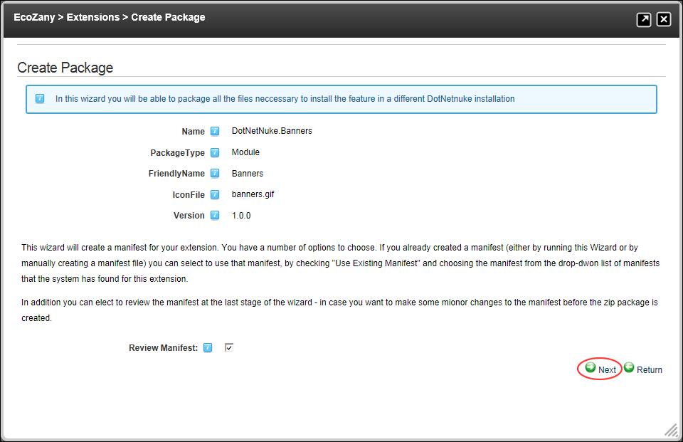
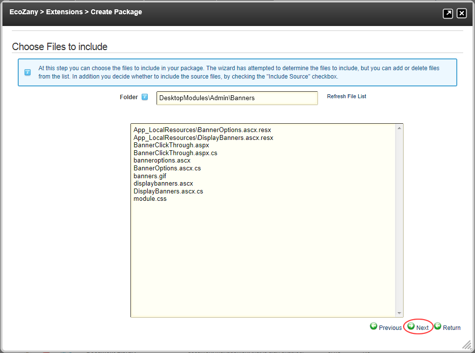
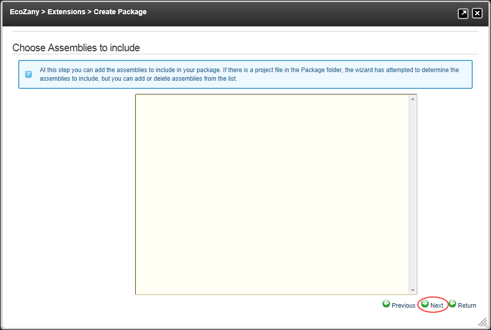
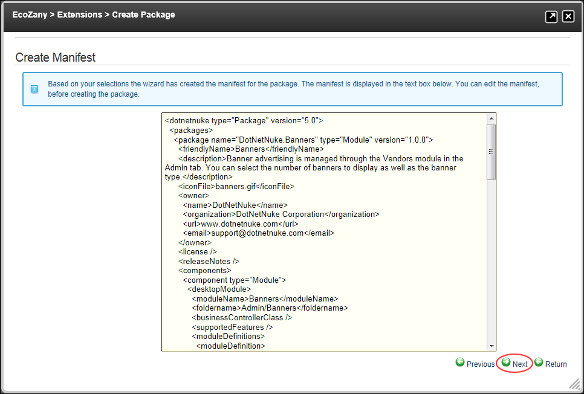
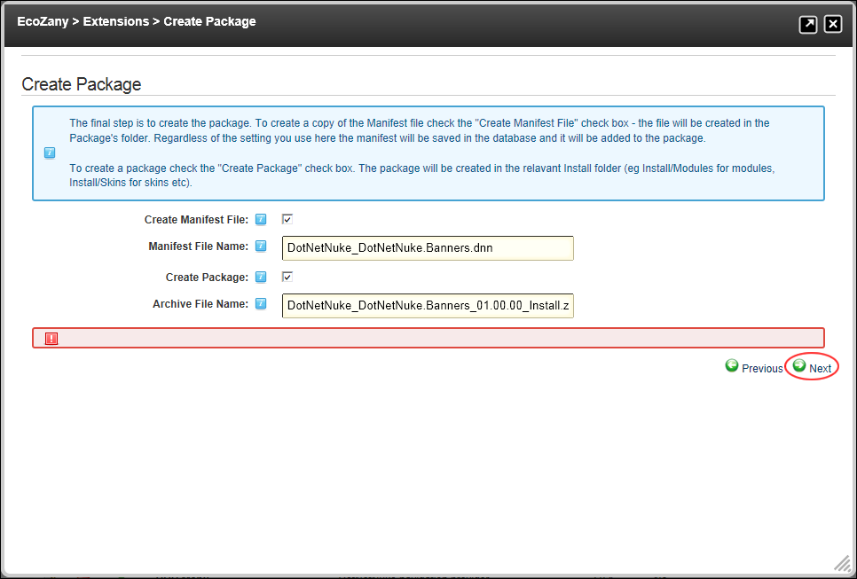

Creating a Module Package
How to create a module package using the Extensions module.
Tip: You can create installation packages for DNN 4+ and DNN 5+ in the same module package by adding two manifest files. The manifest file for DNN 4+ retains the .dnn extension, whereas the DNN 5+ has .dnn5. If you are only producing a DNN5 package, you can use either .dnn or .dnn5 extensions for your files.
- Navigate to Host >
 Extensions.
Extensions.
- Select the Installed Extensions section.
- Expand the Modules section.
- Click the Edit
 button beside the required module. This opens the Edit Extension page.
button beside the required module. This opens the Edit Extension page.
- Click the Create Package link located at the base of this page. This opens the Create Package Wizard.
- On the Create Package - Create Package page, complete the following fields as required:
- At Use Existing Manifest, select from the following options:
- Mark
 the check box to use the existing manifest for the Package.
the check box to use the existing manifest for the Package.
- At Choose Manifest File, select the manifest file from the drop down list. If this option is Step 5 will be skipped.
- Unmark
 the check box if you don't want to use the existing manifest.
the check box if you don't want to use the existing manifest.
- At Review Manifest, select from the following options:
- Mark the check box to review the manifest before creating the new package.
- Unmark the check box if you don't want to review the manifest. If this option is selected Step 7 will be skipped
- Click the Next button.

- On the Create Package - Choose Files To Include page, complete the following fields as required:
- Optional. In the Folder text box, edit the folder name to select files from a different folder and then click the Refresh File List link to view the related files in the multi-line text box.
- At Include Source, select from the following options:
- Mark the check box to include the source code.
- Unmark the check box to include the installation files.
Optional.
- In the multi-line text box, modify the listed files if required:
Highlight and delete any files you do not want to include in this package.
Enter the name of any additional files you want to include in this package.
- Click the Next button.

- On the Create Package - Choose Assemblies To Include page, complete the following fields as required:
- Optional. In the multi-line text box, modify the listed files if required:
- Highlight and delete any assembly files you do not want to include in this package.
- Enter the name of any additional assembly files you do want to include in this package.
- Click the Next button.

- On the Create Package - Create Manifest page, complete the following fields:
- Optional. In the multi-line text box, edit the manifest if required.
- Click the Next button.

- On the Create Package - Create Package page, complete the following fields:
- At Create Manifest File, select from the following options:
- Mark the check box to create a manifest file.
In the Manifest File Name text box, enter the file name to use for the manifest file.
- Unmark the check box if you don't want to create a manifest file.
- In the Manifest File Name text box, enter the file name to use for the manifest.
- At Create Package, select from the following options:
- Mark the check box to create a zip file pack.
- In the Archive File Name text box, enter the file name to use for the archive (zip) file.
- Unmark the check box if you don't want to create a package file.
- In the Archive File Name text box, enter the file name to use for the archive zip file.
- Click the Next button.

- On the Create Package - Create Package Results page the results of the package creation are displayed.